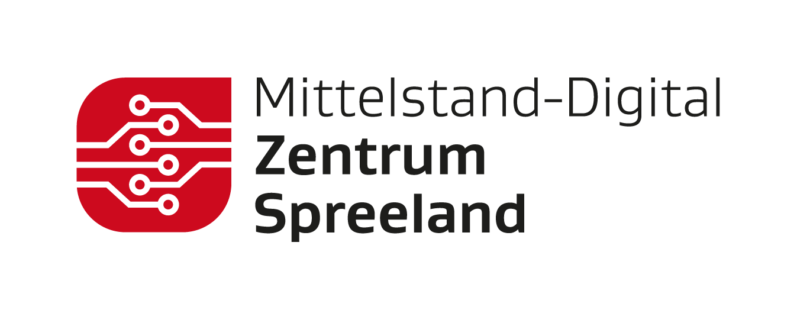

für den erfolgreichen Abschluss des interaktiven Praxis-Workshops
"Open-Weights-Modelle für KMU einfach erklärt"
und die Demonstration fundierter Kenntnisse über lokale Sprachmodelle (Gemma 4 12B Unified), sichere Offline-RAG-Systeme und souveräne Datenverarbeitung.
Open-Weights-Modelle für KMU einfach erklärt
💡 „Das Wissen teilen, nicht die Kontrolle abgeben.“
Willkommen im Cockpit Ihres KI-Workshops! Begleiten Sie uns auf einer Entdeckungsreise, wie kleine und mittlere Unternehmen (KMU) dank moderner Open-Weights-Modelle wie Gemma 4 12B Unified die volle Datensouveränität behalten, komplett offline arbeiten und kostengünstig maßgeschneiderte KI-Lösungen implementieren können.
Was sind Open-Weights-Modelle?
Künstliche Intelligenz beruht auf künstlichen neuronalen Netzen. Ein fertig trainiertes KI-Modell besteht im Kern aus einer mathematischen Struktur und Millionen oder Milliarden von Parametern – den sogenannten Modellgewichten (Weights). Diese Gewichte bestimmen, wie das Modell auf Eingaben reagiert.
Während bei Closed-Source-Modellen (z. B. ChatGPT, Claude) die Modellgewichte geheimgehalten werden und die Nutzung nur über eine Cloud-Schnittstelle (API) des Herstellers erfolgt, werden bei Open-Weights-Modellen (z. B. Googles Gemma-Familie) die gelernten Gewichte öffentlich zur Verfügung gestellt.
Der große Vorteil für KMU: Sie können diese Modelle herunterladen, lokal auf eigener Hardware ausführen und nach Belieben anpassen (Feintuning). Es fließen keine Firmendaten ins Internet ab.
📚 Weiterführende Ressourcen & Analysen
Artificial Analysis
Modell-Benchmarks & Vergleiche
Gemma 4 Modellfamilie
Offizielle Übersicht (DeepMind)
Introducing Gemma 4 12B
Google Blogankündigung
Gemma 4 Model Card
Technische Modellkarte
MDZ Spreeland Workshop
Praxis-Workshop für den Mittelstand
Open Weight vs. Cloud API
Ayunis Leitfaden & Konzept
Open-Weights für KMU
BASIC thinking Fachartikel
Ollama Offline-Inferenz
Einstieg in lokale Modellausführung
Unsloth Fine-Tuning
Effizientes KI-Finetuning (QLoRA)
Docker & GPU Passthrough
Gemma 4 im Docker Container
Interaktiver Gewichte-Visualisierer
Fahren Sie mit der Maus über die Knoten (Neuronen) oder verändern Sie die Schieberegler, um zu verstehen, wie die Modellgewichte die Signalübertragung im Netz steuern. In einem echten Modell wie Gemma 4 12B Unified gibt es 12 Milliarden solcher Verbindungen!
Gewichtssteuerung
Durch Erhöhung des Gewichts einer Verbindung wird das Signal zwischen den Neuronen verstärkt. Bei der Texterstellung wird so bestimmt, welches Wort als nächstes mit der höchsten Wahrscheinlichkeit folgt.
Closed-Source APIs vs. Lokale Open-Weights Modelle
Closed-Source API
Cloud-Schnittstellen
z.B. GPT-4, Claude
- Datenabfluss: Jede Anfrage verlässt das Unternehmen und wandert auf externe Server der US-Anbieter.
- Laufende API-Gebühren: Abrechnung erfolgt nach Nutzung (Tokens), was schwer kalkulierbare Kosten erzeugt.
- Hersteller-Abhängigkeit: Updates können das Modell-Verhalten unvorhersehbar ändern oder sperren.
Open-Weights
Lokale Bereitstellung
z.B. Gemma 4 12B Unified
- 100% Datensouveränität: Kompletter Offline-Betrieb. Keine Betriebsgeheimnisse verlassen Ihr Haus.
- Null API-Kosten: Einmalige Anschaffung der Hardware (z.B. moderner Arbeits-Laptop), danach unbegrenzte kostenfreie Nutzung.
- Volle Kontrolle: Das Modell gehört Ihnen. Keine Zensur, kein plötzliches Abschalten, Möglichkeit des Feintunings.
Interaktiver Datenfluss eines lokalen RAG-Systems
Ein RAG-System (Retrieval-Augmented Generation) erweitert das KI-Modell um ein lokales Gedächtnis. Klicken Sie auf die einzelnen Komponenten in der Pipeline, um zu sehen, wie Daten geladen, indexiert und offline verarbeitet werden, ohne jemals das Werksgelände zu verlassen.
Schritt 1
Dokumentenordner
Der Ausgangspunkt Ihres lokalen Firmenwikis. Hier liegen all Ihre PDFs, alten ISO-Normen, Wartungsprotokolle und Betriebsanleitungen in einem geschützten Ordner auf Ihrem lokalen Rechner oder Server.
Praxis-Tipp: Sortieren Sie Ihre PDFs vor der Indexierung grob vor. Je sauberer die Quelldaten, desto präziser antwortet das System!
Gemma 4 Ökosystem
Flexible Deployment-Umgebungen für Gemma 4
Ob maximale Datensouveränität vor Ort, skalierbare Cloud-Infrastruktur oder schnelle Browser-Experimente – Gemma 4 passt sich flexibel den Sicherheits- und Leistungsanforderungen Ihres KMU an.
1. Local & On-Device
Für absolute Privatsphäre, Offline-Fähigkeit und null API-Kosten laufen Gemma 4 Modelle direkt auf Ihrer eigenen Hardware.
- Desktop & Laptop: Nutzen Sie quantisierte Gemma 4 Checkpoints (verfügbar in E2B, E4B, 12B, 26B & 31B) über extrem populäre und anwenderfreundliche Tools wie Ollama oder LM Studio.
- Edge & Mobile: Die Modelle sind optimiert für den mobilen Betrieb auf iOS, Android (über das eingebaute Android AICore) und kompakte Edge-Devices wie den Raspberry Pi 5.
- Native Apps: Mac-Anwender können über die Google AI Edge Gallery modernste Modelle hardwarebeschleunigt auf Apple-Silicon-GPUs (M1/M2/M3/M4) ausführen.
2. Cloud (Google Cloud)
Für unternehmensweiten Zugriff, Kunden-Anwendungen und zentrale Governance betreiben Sie Gemma 4 skalierbar in der Cloud.
- Serverless Scale: Stellen Sie Gemma 4 über Cloud Run mit dedizierten GPU-Beschleunigern (wie NVIDIA L4) bereit – Sie zahlen sekundenpräzise nur bei aktiver Nutzung.
- Enterprise Control: Nutzen Sie den Google Cloud Model Garden (Vertex AI / Gemini Enterprise Agent Platform), um eigene Ressourcen zu provisionieren und volle Kontrolle über die Infrastruktur zu behalten.
- Custom Orchestration: Orchestrieren Sie komplexe High-Performance-Szenarien via Google Kubernetes Engine (GKE) mit vLLM oder TPUs.
3. Managed & Ecosystem
Für sofortige Tests ohne jeglichen Setup-Aufwand greifen Sie über fertige APIs und das globale KI-Ökosystem auf Gemma 4 zu.
- Google AI Studio: Experimentieren Sie blitzschnell und kostenlos in einer Browser-Oberfläche direkt im Google AI Studio.
- Zero-Setup APIs: Nutzen Sie kostengünstige, OpenAI-kompatible SaaS-Modellschnittstellen über Anbieter wie DeepInfra.
- Cloud Partners & Fine-tuning: Greifen Sie auf Partner-Plattformen wie Amazon Bedrock oder Microsoft Azure AI Foundry zu, laden Sie Weights über Hugging Face und feintunen Sie hocheffizient mit Unsloth.
Lab 1: Qwen Fine-Tuning für KMU-Datensouveränität
Bringen Sie einem leistungsstarken Open-Weights-Modell wie Qwen bei, wie ein Spezialist für Ihre Maschinen und internen Abläufe zu sprechen. In diesem Lab lernen Sie, wie man ein Open-Weights-Modell (z.B. Qwen 2.5 7B) auf hochspezifischen KMU-Maschinenhandbüchern feinjustiert.
💡 Warum Fine-Tuning statt RAG?
Während RAG (Retrieval-Augmented Generation) dem Modell ein externes Gedächtnis verleiht, um spezifische Dokumente zu durchsuchen, verändert Fine-Tuning das inhärente Verhalten, die Tonalität und das tiefe Fachwissen des Modells selbst. Es eignet sich hervorragend, um dem Modell komplexe Formate, branchenspezifischen Jargon oder proprietäre Verhaltensweisen anzutrainieren.
🎓 Ergänzendes Lab: DeepMind Gemma Full-Parameter Fine-Tuning (Lab 5.4)
Erfahren Sie in diesem offiziellen Google DeepMind Lab-Notebook aus dem Kurs AI Foundations mehr über die theoretischen und praktischen Grundlagen des Full-Parameter Fine-Tunings von Gemma-Modellen und stoßen Sie direkt an die Grenzen des GPU-Speichers (OOM).
🇩🇪 Deutsche Übersetzung (Empfohlen)
Vollständig übersetztes Notebook für die lokale oder Colab-Nutzung
🇬🇧 English Original Version
Offizielles Notebook aus dem Google DeepMind Repository
🔬 Interaktiver Fine-Tuning Simulator
Testen Sie den Unterschied! Wählen Sie unten ein Szenario aus, um zu vergleichen, wie das Standard-Modell (Base) (das nichts von Ihrer Firma weiß) und das feinjustierte Qwen-Modell (das auf Ihren Maschinendaten trainiert wurde) auf eine KMU-Spezialfrage antworten.
Lab 2: Gemma 4 ReAct Agent mit lokalen Werkzeugen
Heben Sie Ihre KI auf das nächste Level! Ein Agent liest nicht nur Texte, sondern führt aktiv Aktionen aus. Gemma 4 eignet sich dank seines integrierten Thinking Modes hervorragend, um logische Schlussfolgerungen zu ziehen und komplexe Tool-Chains autonom zu orchestrieren.
⚙️ Offline-Inbetriebnahme auf lokaler Hardware (Ollama Setup)
Führen Sie Sprachmodelle ohne Cloud-Anbindung, absolut sicher und datenschutzkonform direkt auf Ihrer eigenen Hardware via Ollama aus. Befolgen Sie diese Schritte im Terminal:
💡 Hintergrund-Architektur verstehen
Erfahren Sie im Detail, wie Ollama lokal arbeitet, RAM/VRAM verwaltet und die Datenströme steuert.
1. Terminal öffnen & Ollama installieren:
Für macOS und Linux besuchen Sie: ollama.com. Schließen und öffnen Sie das Terminal nach der Installation neu!
Öffnen Sie ein neues Terminal in VS Code. Prüfen Sie zuerst, ob Ollama bereits installiert ist:
Terminal / PowerShell
ollama --versionSollte Ollama nicht installiert sein, nutzen Sie für Windows den schnellen PowerShell-Einzeiler oder laden Sie den Installer für macOS/Linux herunter:
Windows Quick-Install (PowerShell)
irm https://ollama.com/install.ps1 | iex
2. Modell herunterladen und starten:
Starten Sie Ihr Wunschmodell. Für die meisten Standard-Laptops und Büro-PCs (z.B. mit 16 GB RAM) empfehlen wir das extrem flinke Gemma 2 (2B). Es reagiert in Sekundenbruchteilen direkt auf Ihrer CPU. Wer über High-End-Hardware verfügt, kann auch das größere Gemma 4 (12B) wählen:
Gemma 2 (Empfohlen & Schnell auf CPU)
ollama run gemma2:2b
Gemma 4 (Für High-End Systeme ab 16-32GB RAM)
ollama run gemma4:12b
3. Interaktive Konsole & Befehle:
Sobald das Modell geladen ist, können Sie direkt im Terminal Ihre Nachrichten schreiben. Nutzen Sie folgende Befehle zur Steuerung:
Ollama CLI Commands
Available Commands:
/set Set session variables
/show Show model information
/load <model> Load a session or model
/save <model> Save your current session
/clear Clear session context
/bye Exit
/?, /help Help for a command
/? shortcuts Help for keyboard shortcuts
Use """ to begin a multi-line message.
Use \path\to\file to include .jpg, .png, .webp images, or .wav audio files.
4. Maximale Performance durch eigene Modell-Optimierung (Modelfile):
Durch ein Modelfile passen wir Gemma optimal an Ihre CPU-Hardware an. Hierbei weisen wir das Modell an, genau die physische Kern-Zahl Ihrer CPU zu nutzen, was das Rechentempo drastisch steigert. Erstellen Sie eine Datei namens Modelfile im Projektverzeichnis mit folgendem Inhalt:
Modelfile Inhalt (Optimiert für Standard-CPUs)
FROM gemma2:2b
PARAMETER num_thread 4 # Nutzen Sie exakt die Anzahl physischer Kerne Ihrer CPU (z.B. 4 bei i7-1165G7)
PARAMETER num_ctx 4096 # Reduzierter Kontext schont wertvollen RAMSchritt 4a: Das optimierte Modell bauen (registrieren)
Dieser Befehl liest Ihr Modelfile ein und erstellt unter dem Namen gemma-schnell eine neue, hardware-optimierte Variante auf Ihrem PC.
Schritt 4a: Modell bauen
ollama create gemma-schnell -f ./ModelfileSchritt 4b: Das optimierte Modell starten
Startet Ihr frisch optimiertes Modell. Sie werden merken, wie schnell es jetzt auf Ihrer reinen Büro-CPU antwortet!
Schritt 4b: Modell ausführen
ollama run gemma-schnell
💡 Tipp: Sollte der Agent im Terminal zu langsam sein, passen Sie in assets/gemma_agent.py einfach den Modellnamen auf das pfeilschnelle gemma-schnell an.
💡 Spannende Prompts zum Ausprobieren (Testen Sie Ihr lokales Modell!)
Geben Sie diese Prompts nacheinander in Ihren laufenden Terminal-Chat (ollama run gemma-schnell) ein, um die Leistung, Logik und Schreibqualitäten zu testen:
1. Logik & Denken:
Testet das logische Schlussfolgern des Modells:
Prompt 1 (Logik)
Ein Bauer muss einen Wolf, eine Ziege und einen Kohlkopf über einen Fluss bringen. Das Boot kann aber nur den Bauern und ein weiteres Tier oder den Kohl tragen. Wenn der Bauer den Wolf und die Ziege alleine lässt, frisst der Wolf die Ziege. Wenn er die Ziege und den Kohl alleine lässt, frisst die Ziege den Kohl. Wie bringt er alle drei sicher ans andere Ufer? Erkläre Schritt für Schritt.
2. KMU-Praxis & E-Mail-Schreiben:
Testet Tonfall und Formulierungskompetenz:
Prompt 2 (E-Mail)
Schreibe eine sehr freundliche, aber bestimmte E-Mail an einen langjährigen Kunden, dessen Rechnung (Nr. RE-1044, Brutto 737,80 EUR) seit 3 Wochen überfällig ist. Biete ein kurzes Telefonat an, falls es Abstimmungsbedarf gibt.
3. Programmiercode generieren:
Erstellt strukturierten Programmcode auf Abruf:
Prompt 3 (Programmieren)
Schreibe eine kurze Python-Funktion, die prüft, ob eine deutsche IBAN formal gültig ist.🤖 Der Spreeland-Agent (gemma_agent.py) — Was ist das Ziel?
Das Ziel: Ein normaler Chatbot antwortet nur mit Text. Ein Agent hingegen kann selbstständig programmierte Werkzeuge (Python-Funktionen) aufrufen, um reale Probleme zu lösen! Unser Agent hat Zugriff auf drei Werkzeuge:
- 📦
check_stock(item): Fragt den aktuellen Bestand im Lager ab. - ⏱️
calculate_production_time(amount): Berechnet die benötigte Produktionszeit für Werkstücke. - 📁
query_technical_db(keyword): Sucht Maschinenspezifikationen im internen Wiki.
👣 Step-by-Step Anleitung zum Ausführen:
Schritt 1: Terminal vorbereiten
Falls Sie noch im interaktiven Ollama-Chat sind, tippen Sie
Falls Sie noch im interaktiven Ollama-Chat sind, tippen Sie
/bye ein und drücken Sie Enter, um zurück zur PowerShell zu kehren.
Schritt 2: Das Agenten-Skript starten
Führen Sie das Skript in Ihrem VS Code Terminal mit folgendem Befehl aus (Kopierbar):
Führen Sie das Skript in Ihrem VS Code Terminal mit folgendem Befehl aus (Kopierbar):
Agenten starten (PowerShell)
python assets/gemma_agent.py
Schritt 3: Die Logs analysieren
Beobachten Sie die Ausgabe! Der Agent zerlegt die Kundenbestellung ("1500 Titanbolzen") autonom in Einzelschritte:
1. Er denkt nach und ruft
2. Er stellt fest, dass nur 320 auf Lager sind, also 1180 fehlen.
3. Er ruft
4. Er gibt Ihnen die perfekte, kombinierte Endantwort aus!
Beobachten Sie die Ausgabe! Der Agent zerlegt die Kundenbestellung ("1500 Titanbolzen") autonom in Einzelschritte:
1. Er denkt nach und ruft
check_stock("Titanbolzen") auf.2. Er stellt fest, dass nur 320 auf Lager sind, also 1180 fehlen.
3. Er ruft
calculate_production_time("1180") auf und berechnet die Produktionszeit.4. Er gibt Ihnen die perfekte, kombinierte Endantwort aus!
gemma_agent.py (Python-Auszug)
# gemma_agent.py läuft lokal über Ihre gemma-schnell Instanz!
# Kernloop des ReAct Patterns:
# Denken -> Aktion (Toolaufruf) -> Beobachtung (Tool-Ergebnis) -> Endantwort⚡ Live-Agenten-Simulator
Schauen Sie Gemma 4 beim selbstständigen Denken und Handeln zu! Wählen Sie eine komplexe Aufgabe aus und starten Sie den Agenten-Loop, um die Schritte (Gedankengänge, Werkzeugaufrufe und Beobachtungen) in Echtzeit mitzuverfolgen.
Spreeland-Agent Terminal — Gemma 4 Loop
// Bereit für die Ausführung. Wählen Sie oben eine Aufgabe und klicken Sie auf Start.
Lab 3: Strukturierte Datenextraktion aus Rechnungen & E-Mails
Im Unternehmensalltag gehen täglich Unmengen an unstrukturierten Dokumenten ein – wie Lieferanten-Rechnungen im PDF-Format oder formlose E-Mails von Kunden. Mit lokalen Open-Weights-Modellen können Sie diese Dokumente vollautomatisch, lokal und datenschutzkonform einlesen und relevante Informationen in ein sauberes Datenbank-Format (wie JSON) überführen.
🎓
Weiterführende Ausbildung & Google Skills Zertifikat
Vertiefen Sie Ihr Wissen über generative KI-Architekturen, Prompt-Engineering und strukturierte Extraktion! Absolvieren Sie den offiziellen Google Lernpfad und sichern Sie sich ein anerkanntes Zertifikat:
🧠 Wie funktioniert die lokale Extraktion?
Durch das Vorschalten eines strikten Systemprompts (System Instructions) zwingen wir das lokale Modell dazu, ausschließlich im strukturierten JSON-Format zu antworten. Die Temperatur setzen wir auf 0.0, um absolut deterministische Ergebnisse ohne Fantasie-Antworten (Halluzinationen) zu garantieren.
📂 Part 2: Rechnungs-Extraktion auf Knopfdruck im Terminal
Wir haben im Projektverzeichnis einen Ordner namens Rechnungen/ mit Beispieldokumenten und ein fertiges Skript extract_invoice.py angelegt. Dieses Skript lädt die Belege lokal ein und lässt Gemma die Daten in sauberes JSON strukturieren.
Führen Sie diese Befehle in Ihrem VS Code Terminal aus:
Rechnung 1 (Schweißtechnik GmbH) extrahieren:
Extrahiere Rechnung 1001
python extract_invoice.py Rechnungen/rechnung_1001.txt
Rechnung 2 (Cottbuser Verpackung) extrahieren:
Extrahiere Rechnung 1002
python extract_invoice.py Rechnungen/rechnung_1002.txt📊 Interaktiver Extraktions-Simulator
Wählen Sie einen Beleg aus, um live zu sehen, wie ein lokales Modell den Text vollautomatisch ausliest und in saubere JSON-Daten für Ihre Warenwirtschaft oder SQL-Datenbank zerlegt:
Frage 1 von 5
Was unterscheidet ein Open-Weights-Modell im Wesentlichen von einem Closed-Source-Modell?
4/5
Punkte
KI-Souveränitäts-Experte
Fantastisch! Sie haben die Kernkonzepte von Open-Weights-Modellen und Datensouveränität hervorragend verstanden. Sie können Ihre RAG-Kenntnisse nun direkt in Ihrem KMU anwenden.

Teilnahme-Zertifikat
Dieses Zertifikat bescheinigt die erfolgreiche Teilnahme am Workshop von:
Dr. Svetlana Meissner